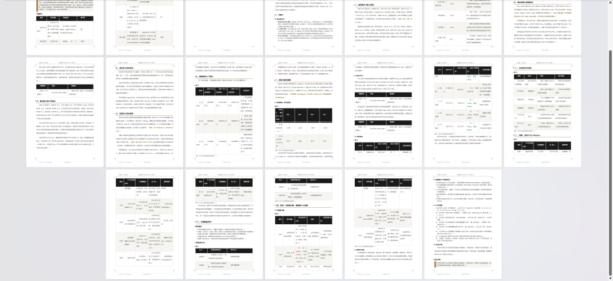
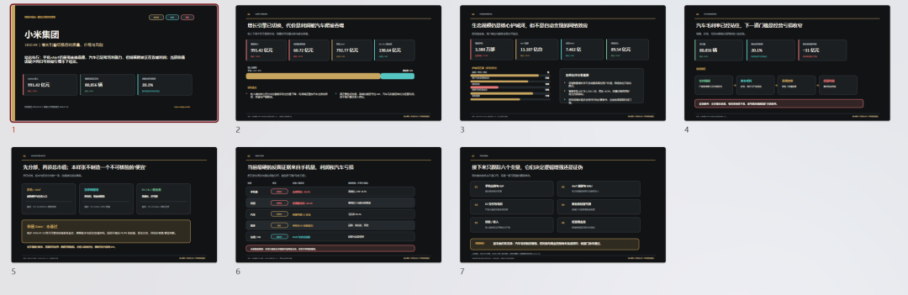
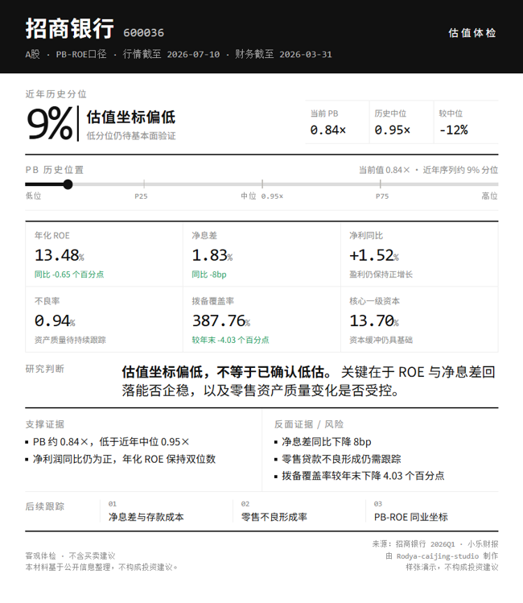
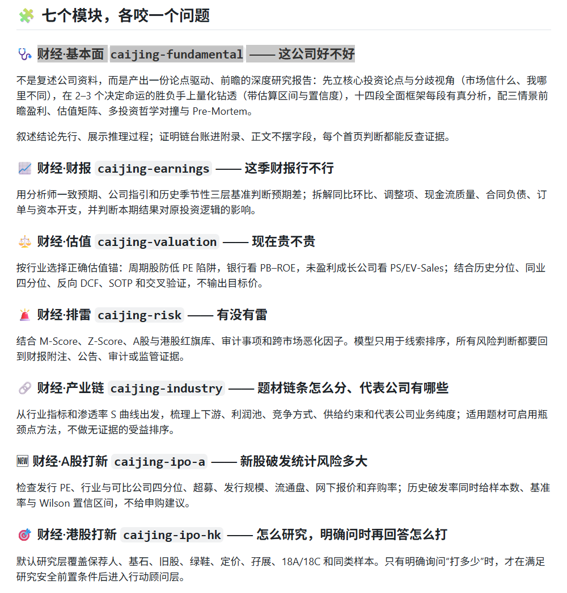
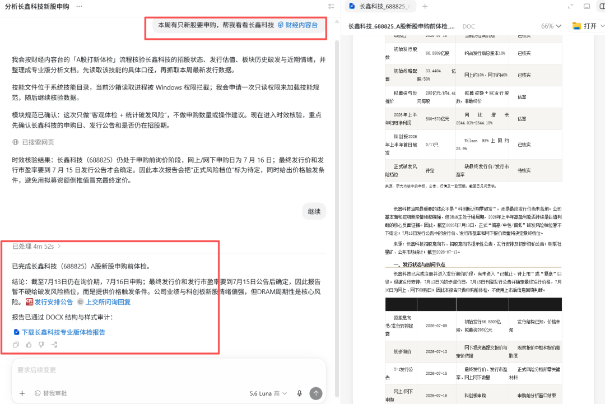
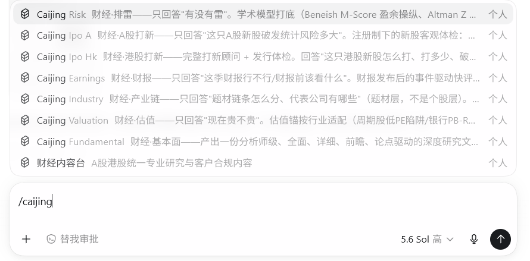
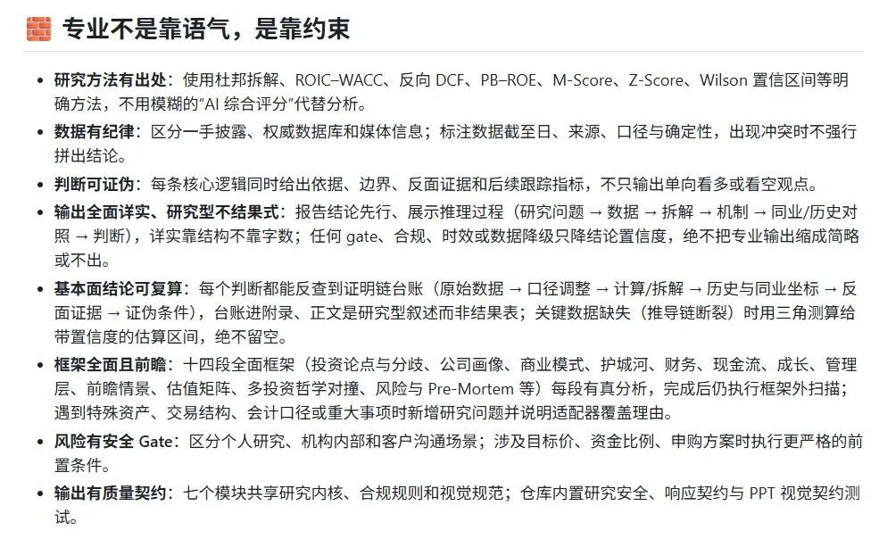
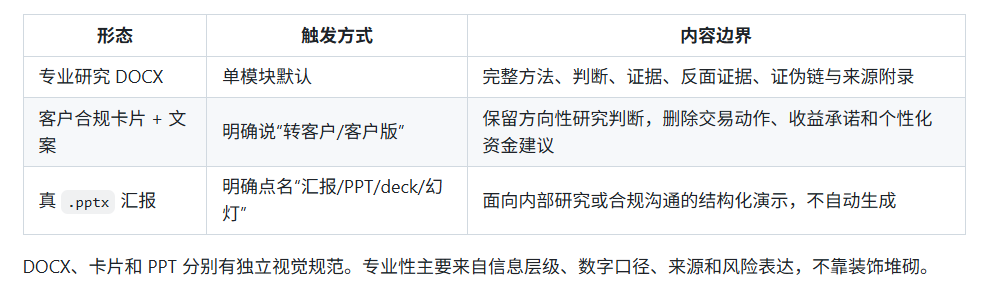

名字叫：财经内容台 · rodya-caijing-studio。
做这个skill的目的也很简单：
1、帮助个人投资者迅速进入一个全新领域，建立稳定的公司、财报、估值和风险检查框架。
2、帮助研究人员快速搭起完整分析底稿和初稿。
3、帮助券商投顾 / 客户经理从同一研究内核生成有数据、有来源、有边界的客户沟通材料，并按所属机构完全合规。
功能不限于：
1、一句话生成万字级别的专业级研报。

2、投研企业内部分享可编辑的PPT一键生成

3、合规化可分享客户的投资卡片

4、最强的是它有七大模块，可单独分析，也可汇总。

功能强大，用起来却很简单：安装后，一句话回复就可以。

或者安装后用 / 命令，会出现选择。你也可以不用输入， AI 会自行帮你调用。

功能的强大的背后是方法论的支持，同时合规性拉满，宁可降级标注，也不胡编乱造。

有三种交付模式，默认交付是专业性的word文档，也可以自行选择。

欢迎大家安装使用和反馈。
有什么问题，我会持续迭代增强。开源地址：
https://github.com/nekopunch11/rodya-caijing-studio我也建立个 AI 赋能交流群，如果有兴趣可以入群交流。